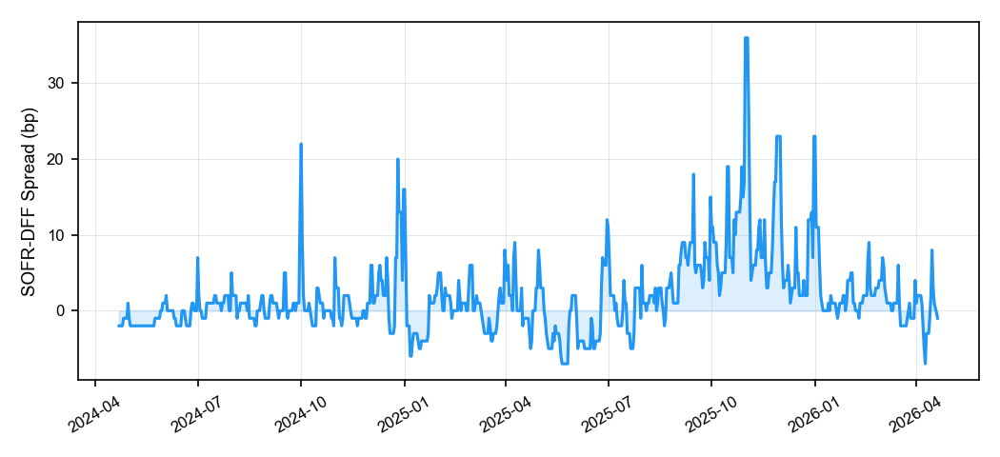
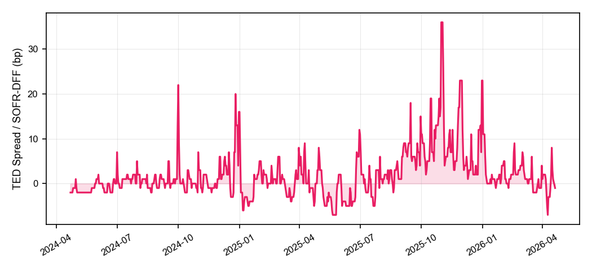
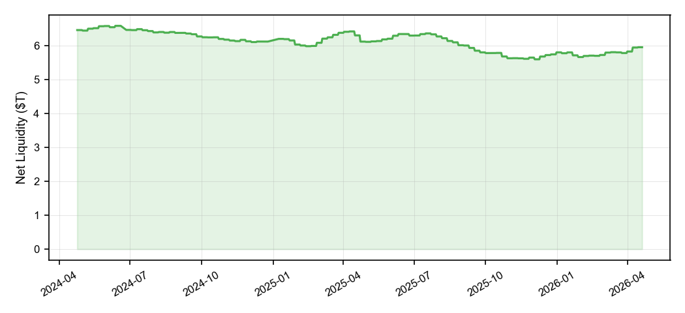
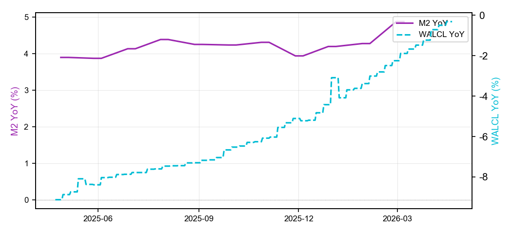
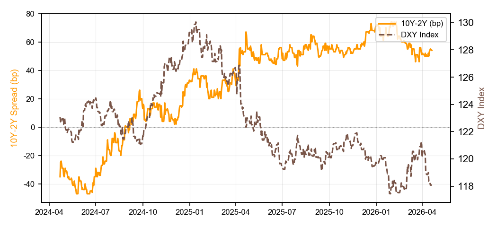
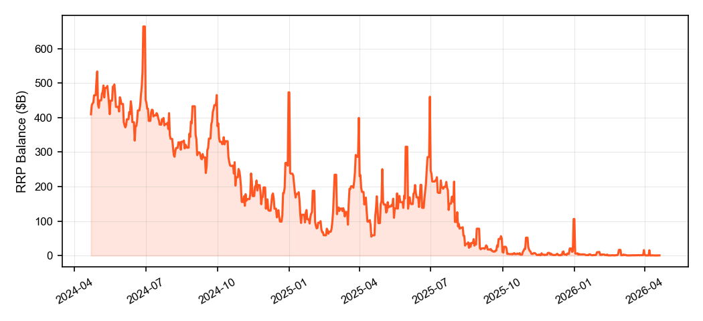

报告日期：20260421 | 生成时间：2026-04-21 22:46
| 综合评级 |
|---|
| L1 充裕 |
| 指标 | 评级 |
|---|---|
| SOFR-DFF利差 | L1 充裕 |
| TED利差 | L1 正常 |
| 净流动性 | L1 充裕 |
| 指标 | 最新值 | 评级 | 备注 |
|---|---|---|---|
| SOFR-DFF利差 | -1.0bp | L1 充裕 | 利差<5bp，银行间市场平稳 |
| TED利差 | -1.0bp | L1 正常 | SOFR-DFF=-1bp，<历史P10，银行间市场平稳（LIBOR已停用，以SOFR-DFF替代） |
| 净流动性 | $5.95T | L1 充裕 | 净流动性扩张，流动性环境友好 |
SOFR-DFF利差（当前: -1.0bp）：SOFR（担保隔夜融资利率）与有效联邦基金利率（EFFR/DFF）之差，反映银行间担保融资市场的信用溢价。FRED SOFR为年利率(%)，已换算为bp显示（业界惯例）；日均值无法捕捉盘中峰值；>50bp为2020 COVID实测危机级别。
TED利差（当前: -1.0bp）：传统3M LIBOR减3M国债收益率已于2022-01-21因LIBOR停用而数据中断；当前以SOFR-DFF日频利差替代。⚠️ 新口径绝对数值不可与历史LIBOR口径TED利差直接比较。
美联储净流动性（当前: $5.95T）：美联储总资产（WALCL）减财政部一般账户（TGA）减RRP余额，反映货币政策与财政政策合力的基础流动性供给。
| 指标 | 当前值 | 评级 | 评级说明 |
|---|---|---|---|
| M2同比增速 | 4.88% | L3 | 收紧 |
| WALCL同比 | -0.32% | L4 | 危险 |
| 10Y-2Y利差 | 54bp | L4 | 危险 |
| DXY美元指数 | 118.08 | L3 | 收紧 |
| RRP余额 | $503.0M | — | 辅助观察 |
M2同比增速（当前: 4.88%）：M2货币供应量的12个月变化率。2020 COVID后M2同比曾达27%（2021年2月），随后QT压缩至6%以下。当前M2 YoY=4.9%，货币供给偏紧，反映货币供给仍相对紧张。
WALCL同比（当前: -0.32%）：美联储总资产的52周变化率。正值代表扩表（QE），负值代表缩表（QT）。当前QT加速，流动性快速收缩，表明缩表仍在进行。
10Y-2Y利差（当前: 54bp）：利差>150bp为flight-to-safety危机信号（如2008 GFC均值148bp）；利差<-50bp为深度倒挂，是激进QT周期正常现象，非危机信号（如2022 QT均值-33bp）。当前曲线正常陡峭，经济保持增长。
美元指数DXY（当前: 118.08）：美联储贸易加权Broad美元指数(DTWEXBGS)。⚠️ 此为Broad指数（非ICE DXY），含新兴市场货币，通常比ICE DXY高约20点。>123.4（P95）为历史极值，代表美元流动性危机。当前DXY=118.08（P75-P90），美元明显强势，值得警惕。
隔夜逆回购RRP（当前: $503M）：v3.1已从一级指标降为辅助观察，因其在不同市场环境下存在方向性歧义（高余额=过剩/低余额=充裕均有时成立）。FRED RRPONTTLD原始单位为B（十亿美元），已换算为M显示。
| 月份 | SOFR-DFF | RRP余额 | 净流动性 | WALCL同比 | M2同比 | 10Y-2Y |
|---|---|---|---|---|---|---|
| 2026-03 | 1bp (L1) | $15782M (L4) | $5.78T (L1) | -1.2% (L4) | +4.9% (L3) | 54bp (L4) |
| 2026-02 | 2bp (L1) | $16318M (L4) | $5.73T (L1) | -2.3% (L4) | +4.9% (L3) | 65bp (L4) |
| 2026-01 | 3bp (L1) | $9629M (L4) | $5.66T (L2) | -3.4% (L4) | +4.3% (L3) | 68bp (L4) |
| 2025-12 | 6bp (L2) | $105993M (L2) | $5.80T (L1) | -3.1% (L4) | +4.2% (L3) | 65bp (L4) |
| 2025-11 | 12bp (L2) | $7561M (L4) | $5.65T (L1) | -5.1% (L5) | +3.9% (L3) | 54bp (L4) |
| 2025-10 | 11bp (L2) | $51802M (L3) | $5.63T | -6.1% (L5) | +4.3% (L3) | 54bp (L4) |
SOFR: FRED SOFR
RRP余额: FRED RRPONTTLD（辅助观察）
净流动性: FRED WALCL - FRED WTREGEN - RRPONTTLD
M2同比: FRED M2SL（12个月差分）
WALCL同比: FRED WALCL（52周差分）
10Y-2Y: FRED T10Y2Y
TED利差: FRED TEDRATE（2022-01-21后LIBOR停用中断）
框架说明: Dollar Liquidity Theory Framework v3.1






SOFR-DFF 利差（日均值）
| 区间 | 评级 | 含义 |
|---|---|---|
| <5bp | L1 | 充裕，正常宽松 |
| 5–15bp | L2 | 温和，货币市场轻微收紧 |
| 15–35bp | L3 | 关注，流动性收紧信号 |
| 35–50bp | L4 | 警惕，银行间压力上升 |
| >50bp | L5 | 危机，系统性风险（2020 COVID峰值约50bp） |
当前: -1.0bp → L1 充裕
TED 利差（历史LIBOR口径，2022年后需替换）
| 区间 | 评级 | 含义 |
|---|---|---|
| <20bp | L1 | 充裕（历史P10） |
| 20–40bp | L2 | 温和（历史P25） |
| 40–70bp | L3 | 关注（历史P50–P75） |
| 70–140bp | L4 | 警惕（历史P95） |
| >140bp | L5 | 危机（历史P99，2008 GFC峰值458bp） |
当前: -1.0bp → L1 正常
> 注：2022-01-21 LIBOR停用后，建议以SOFR3-TB3MS替代。历史百分位基于1986–2022 TEDRATE共9,099个观测。
美联储净流动性（WALCL − TGA − RRP）
| 区间 | 评级 | 含义 |
|---|---|---|
| >6.5T | L1 | QE大规模放水 |
| 5.5–6.5T | L2 | 正常区间 |
| 4.5–5.5T | L3 | QT进行中，收紧 |
| 3.5–4.5T | L4 | 深度QT |
| <3.5T | L5 | 极度收紧 |
当前: $5.95T → L1 充裕
WALCL 同比变化
| 区间 | 信号 |
|---|---|
| >10% | L1 QE大扩表 |
| 5–10% | L2 温和扩张 |
| 0–5% | L3 正常 |
| -5–0% | L4 QT进行中 |
| <-5% | L5 深度QT |
当前: WALCL同比 -0.32% → L4 危险
M2 同比变化
| 区间 | 信号 |
|---|---|
| >15% | L1 超级QE |
| 10–15% | L2 扩张 |
| 5–10% | L3 正常 |
| 0–5% | L4 收紧 |
| <0% | L5 收缩 |
当前: M2同比 4.88% → L3 收紧
10Y-2Y 收益率曲线利差
| 区间 | 信号 |
|---|---|
| >150bp | L1 正常陡峭（危机前兆，2008 GFC均值148bp） |
| 50–150bp | L2 正常至接近倒挂 |
| 0–50bp | L3 接近倒挂 |
| -50–0bp | L4 倒挂（QT周期正常现象） |
| <-50bp | L5 深度倒挂（激进QT，非危机） |
当前: 54bp → L4 危险。注：倒挂≠危机。2008 GFC爆发时曲线已转陡峭；2022 QT期间深度倒挂但经济未崩溃。方向比绝对值更重要。
RRP 隔夜逆回购余额
| 余额 | 信号 |
|---|---|
| >1.0T | 流动性冗余淤积 |
| 0.5–1.0T | 正常区间 |
| 0.1–0.5T | 缓冲量减少，流动性流入市场 |
| <0.1T | 极低（需结合情境判断含义） |
当前: $503.0M → 辅助观察
DXY 美元指数
| 区间 | 信号 |
|---|---|
| <100 | L1 弱势美元 |
| 100–109 | L2 正常偏低 |
| 109–116 | L3 正常 |
| 116–121 | L4 强势 |
| >121 | L5 极端强势（历史P95） |
当前: DXY 118.08 → L3 收紧